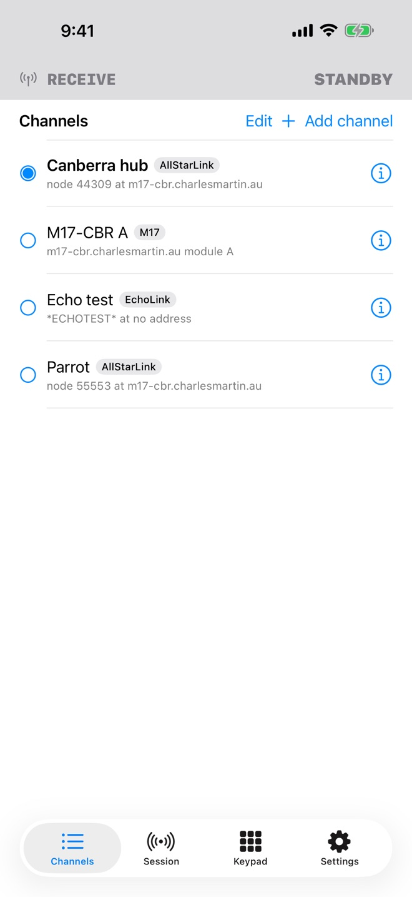
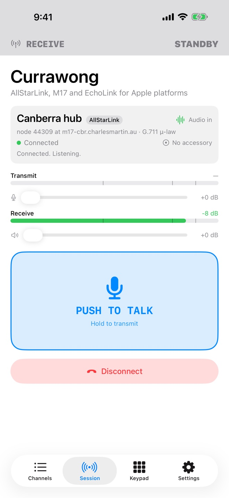
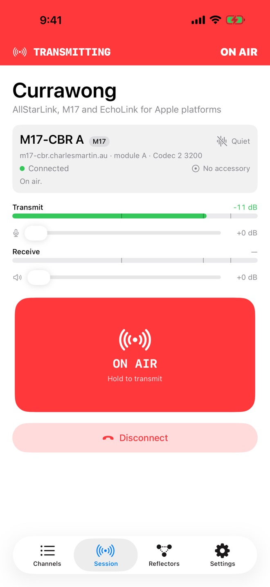
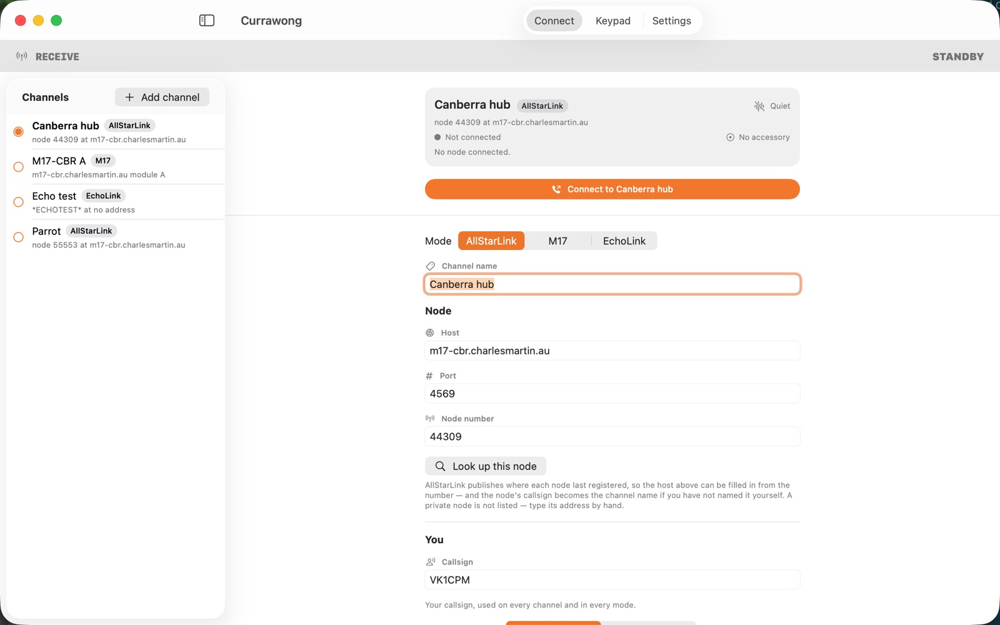
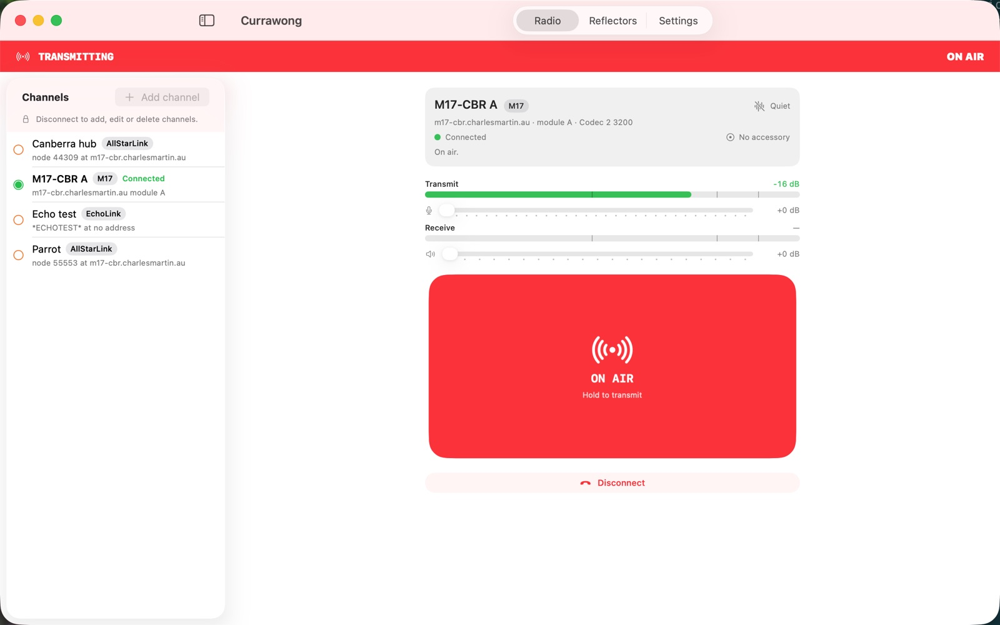

Currawong
An amateur radio app for iPhone, iPad and Mac. It connects to AllStarLink nodes, EchoLink stations and M17 reflectors, the voice networks radio amateurs run over the internet.
Pick a destination, connect, and hold the button to talk. Currawong is built to get you on the air quickly. It covers what you need to listen and transmit, without a wall of settings to work through first.
Currawong is free and open source, under the Apache 2.0 licence.
Currawong is in testing and is not on the App Store yet.
Screenshots





Three networks
AllStarLink
Type a node number and Currawong looks up its address. Connect with a node secret arranged with the node's owner, or through Web Transceiver using your allstarlink.org login.
EchoLink
Browse and search the station directory. Currawong finds a public proxy when you connect, or uses your own if you run one.
M17
Choose a reflector and module from the list the M17 Project publishes. Audio uses the open Codec 2 voice codec.
Transmitting
- Hold the on-screen button, or use a Bluetooth push-to-talk accessory, which you teach to Currawong by pressing it.
- A headset or remote button can also key the radio. It is off unless you switch it on.
- A transmit watchdog, from 5 to 600 seconds, ends any over that runs too long. It cannot be switched off.
- Transmit also stops when a Bluetooth link drops, a call comes in, or the audio route changes.
- On iPhone, a Live Activity shows on the lock screen while you are transmitting.
Everything else
- Save destinations as channels, one tap from connecting again.
- Transmit and receive level meters, with microphone and receive gain.
- A DTMF keypad for node commands, with a command reference.
- Receive keeps playing with the screen locked.
You need a licence to transmit
Currawong does not verify licences. Transmitting on amateur frequencies requires a licence in your country. Your callsign is sent with every transmission and identifies you as responsible for it. Each network issues its own account or credentials.
Privacy
Currawong has no accounts and no server of its own, so nothing you type reaches us. Your channels, callsign and credentials stay on your device. The privacy policy has the details.
Support
To report a bug or ask a question, open an issue on GitHub. A transmission that did not stop when you let go is the most useful thing you can report.
The app's source is at github.com/cpmpercussion/currawong and its protocol libraries are at github.com/cpmpercussion/swift-hamvoip.